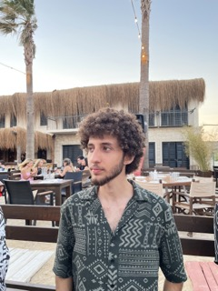

About Ulas Kaygisiz and His Blog
Hi everyone, I am Ulas. I born on August 4, 2000 in Ankara, Turkey. Although I born in Turkey, I am half Greek and half Kurdish. I came to United States for my undergraduate degree and currently I am a senior studying computer science at Michigan State University.

In this blog page, I want to share the things that interests me with you. I like doing research about things and talk about them with my parents over phone. However, after some time, I forgot the details of the topics, even forgot that I did research about a specific topic. That is why I decided to keep this blog something like a diary, but decided to write things that are informative and may capture your interest as well. Here are some of my hobbies:
- Chess
- Music
- Fishing
- Volleyball
- Technology
- Programming
I hope that we will have too much fun sharing things with each other in this blog.